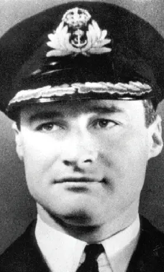
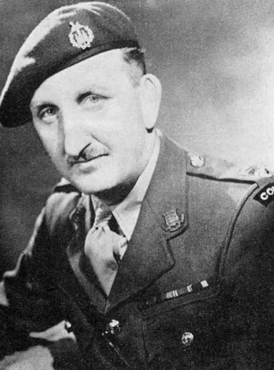
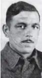
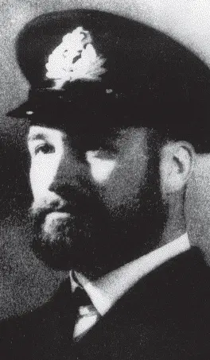

For great gallantry, skill
and devotion to duty as gunlayer of the pom-pom in a motor gun boat
in the St. Nazaire raid. Completely exposed, and under heavy fire he
engaged positions ashore with cool and steady accuracy. On the way
out of the harbour he kept up the same vigorous and accurate fire
against the attacking ships, until he was killed at his gun. This
Victoria Cross is awarded in recognition not only of the gallantry
and devotion to duty of Able Seaman Savage, but also of the valour
shown by many others, unnamed, in Motor Launches, Motor Gun Boats
and Motor Torpedo Boats, who gallantly carried out their duty in
entirely exposed positions against Enemy fire at very close
range....
Full Citation

Robert Edward Dudley RYDER
For great gallantry in the
attack on St. Nazaire. He commanded a force of small unprotected
ships in an attack on a heavily defended port and led H.M.S.
Campbeltown in under intense fire from short range weapons at point
blank range. Though the main object of the expedition had been
accomplished in the beaching of Campbeltown, he remained on the spot
conducting operations, evacuating men from Campbeltown and dealing
with strong points and close range weapons while exposed to heavy
fire for one hour and sixteen minutes, and did not withdraw till it
was certain that his ship could be of no use in rescuing any of the
Commando Troops who were still ashore. That his Motor Gun Boat, now
full of dead and wounded, should have survived and should have been
able to withdraw through an intense barrage of close range fire was
almost a miracle...
Full Citation

Augustus Charles NEWMAN
On the night of 27th/28th
March, 1942, Lieutenant-Colonel Newman was in command of the
military force detailed to land on enemy occupied territory and
destroy the dock installations of the German controlled naval base
at St Nazaire. This important base was known to be heavily defended
and bomber support had to be abandoned owing to bad weather. The
operation was therefore bound to be exceedingly hazardous, but
Lieutenant-Colonel Newman, although empowered to call off the
assault at any stage, was determined to carry to a successful
conclusion the important task which had been assigned to him. Coolly
and calmly he stood on the bridge of the leading craft, as the small
force steamed up the estuary of the River Loire, although the ships
had been caught in the enemy searchlights and a murderous crossfire
opened from both banks, causing heavy casualties.....
Full Citation

Thomas Frank DURRANT
For great gallantry, skill and
devotion to duty when in charge of a Lewis gun in H.M. Motor Launch
306 in the St Nazaire raid on the 28th March, 1942. Motor Launch 306
came under heavy fire while proceeding up the River Loire towards
the port. Sergeant Durrant, in his position abaft the bridge, where
he had no cover or protection, engaged enemy gun positions and
searchlights on shore. During this engagement he was severely
wounded in the arm but refused to leave his gun. The Motor Launch
subsequently went down the river and was attacked by a German
destroyer at 50-60 yards range, and often closer. In this action
Sergeant Durrant continued to fire at the destroyer’s bridge with
the greatest of coolness and with complete disregard of the enemy’s
fire.....
Full Citation

Stephen Halden BEATTIE
For great gallantry and
determination in the attack on St. Nazaire in command of H.M.S.
Campbeltown. Under intense fire directed at the bridge from point
blank range of about 100 yards, and in the face of the blinding
glare of many searchlights, he steamed her into the lockgates and
beached and scuttled her in the correct position. This Victoria
Cross is awarded to Lieutenant-Commander Beattie in recognition not
only of his own valour but also of that of the unnamed officers and
men of a very gallant ship’s company, many of whom have not
returned....
Full Citation